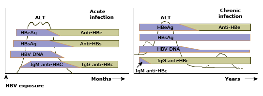

Serologic responses to hepatitis B virus infection

Schematic representation of the serologic responses to acute and chronic HBV infection in relation to the serum ALT concentration. (Left panel) Acute infection is characterized initially by the presence of HBeAg, HBsAg, and HBV DNA beginning in the preclinical phase. IgM anti-HBc appears early in the clinical phase; the combination of this antibody and HBsAg makes the diagnosis of acute infection. Recovery is accompanied by normalization of the serum ALT, disappearance of HBV DNA, HBeAg to anti-HBe seroconversion, and subsequently HBsAg to anti-HBs seroconversion and switch from IgM to IgG anti-HBc. Thus, previous HBV infection is characterized by anti-HBs and IgG anti-HBc. (Right panel) Chronic infection is characterized by persistence of HBeAg (for a variable period), HBsAg, and HBV DNA in the circulation; anti-HBs is not seen (in approximately 20% of patients, a non-neutralizing form of anti-HBs can be detected). Persistence of HBsAg for more than 6 months after acute infection is considered indicative of chronic infection.
HBV: hepatitis B virus; ALT: alanine aminotransferase; HBeAg: hepatitis B e-antigen; anti-HBe: antibody to hepatitis B e-antigen; HBsAg: hepatitis B surface antigen; anti-HBs: antibody to hepatitis B surface antigen; IgM: immunoglobulin M; anti-HBc: antibody to hepatitis B core antigen; IgG: immunoglobulin G.